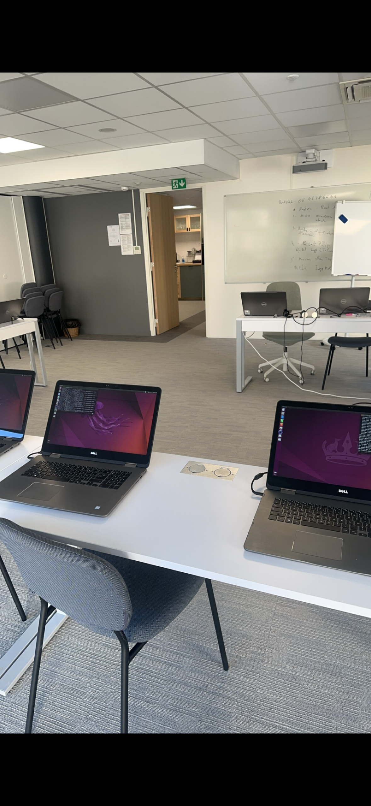
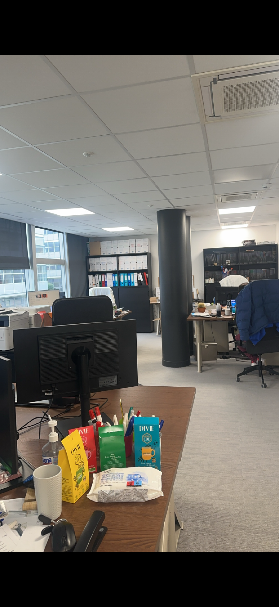
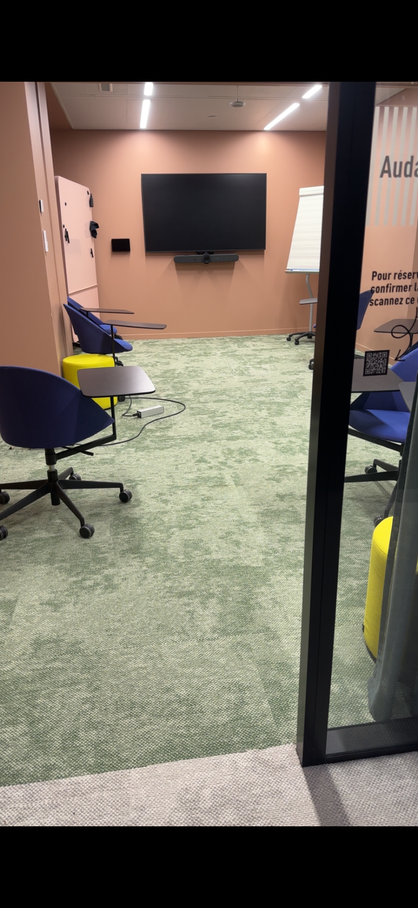
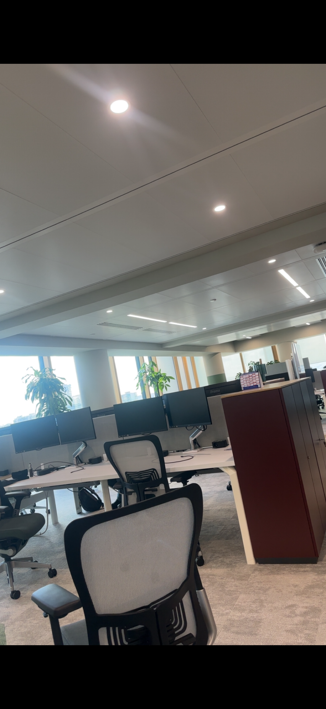
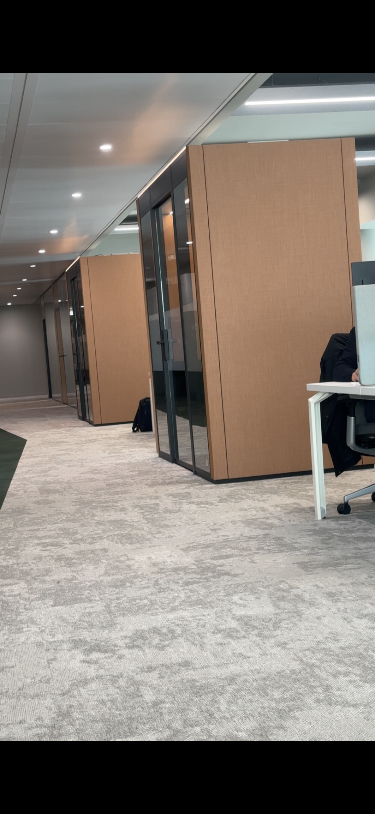

Mon stage de 2ème année
Présentation du stage
- Entreprise : Ambient IT, organisme de formation innovant spécialisé dans les technologies de pointe (cybersécurité, DevOps, développement web, cloud computing...). Petite structure située à Pantin (93)
- Période et durée : Du 24 janvier au 26 mars 2025 (8 semaines)
- Contexte : J’ai choisi Ambient IT car je voulais vivre une expérience différente de ce que propose une grande entreprise : ici, chaque personne compte vraiment. J’ai été attirée par leur passion pour l’innovation, leur esprit d’équipe et la possibilité de toucher à des projets variés, tout en étant accompagnée par des experts accessibles et bienveillants. Je voyais ce stage comme une chance de sortir de ma zone de confort, de gagner en confiance, et de prouver que je pouvais avoir un vrai impact, même en tant qu’étudiante. Mon objectif : apprendre, m’investir, et repartir avec des compétences concrètes… mais aussi des souvenirs et des rencontres qui comptent.
Découverte de l’entreprise
- Culture d’entreprise : Même si je savais qu’Ambient IT était une petite structure, j’ai été surprise par l’ambiance très libre et décontractée. Il n’y avait pratiquement aucune hiérarchie, tout le monde se tutoyait, et le style vestimentaire était complètement libre. Cette culture basée sur la simplicité, la confiance et l’autonomie m’a permis de m’intégrer rapidement et de me sentir à l’aise.
- Tuteur et management : Dans une petite structure, le management est très direct et très “terrain”.
Mon
tuteur était aussi le dirigeant de l’entreprise : il donnait souvent des tâches sur le moment, en fonction des
urgences et des besoins du jour, plutôt que via un planning fixé à l’avance. Le tutoiement était naturel, et
les attentes étaient claires : aller droit au but, être autonome et livrer vite.
J’ai aussi constaté une organisation très centralisée : la communication entre les 3 équipes passait principalement par lui. Cela pouvait paraître assez autoritaire, mais ça m’a surtout permis d’observer concrètement la coordination au quotidien : arbitrer les priorités, transmettre les infos au bon moment, recadrer quand il faut, et garder le cap malgré les imprévus. Avec du recul, c’est une expérience exigeante et très formatrice, qui m’a appris à mieux m’organiser, à prioriser et à communiquer de façon plus professionnelle. - Environnement de travail : L’environnement de travail était organisé en open space, ce qui facilitait la communication et la collaboration entre les équipes. Les locaux étaient agréables et bien équipés, avec des espaces adaptés pour travailler seul ou en groupe. Les horaires étaient flexibles (9h30–17h30), ce qui m’a permis de trouver un bon équilibre et de rester efficace tout au long de la journée.
- Ce qui m’a marquée : C'est la liberté d’initiative offerte par la structure : j’ai pu proposer mes propres idées pour améliorer leur site internet, tant sur le design que sur les fonctionnalités. Voir mes suggestions rapidement prises en compte et mises en production a été très valorisant. J’ai eu la satisfaction de constater l’impact concret de mon travail, ce qui m’a rendue fière et m’a donné confiance en mes capacités.
Missions et réalisations
Pendant mon stage, j’ai travaillé sur deux projets principaux :
- Optimisation d’un terminal WebSSH : Face à la lenteur de l’outil, j’ai analysé l’origine du problème, testé différentes solutions, puis mis en place un système de buffer clavier pour améliorer la réactivité. Le terminal est ainsi devenu beaucoup plus fluide et agréable à utiliser.
- Automatisation de la création des devis de formation : Après avoir étudié le fonctionnement de l’outil Pennylane, j’ai relié son API au formulaire WPForms de WordPress : désormais, dès qu’un client remplit un formulaire, un devis clair et structuré se génère automatiquement.
J’ai également mené d’autres missions : création de pop-ups dynamiques, nettoyage de la base de données, traduction de documents, ajout d’une barre de recherche, etc.
Pour réaliser ces tâches, j’ai utilisé des outils comme WordPress, FileZilla, VSCode, Postman, PHPMyAdmin, ainsi que des langages tels que PHP, JavaScript, SQL, HTML/CSS et Shell.
Ce stage m’a permis d’appliquer concrètement les compétences acquises en BUT Informatique : analyse de problèmes, développement web, gestion de bases de données, automatisation, mais aussi organisation et autonomie. J’ai appris à m’adapter à des projets existants, à travailler directement sur un site en production, à documenter mes démarches et à solliciter l’aide de mon tuteur lorsque nécessaire. Cette expérience m’a fait progresser techniquement et m’a donné confiance dans ma capacité à apporter des solutions concrètes en entreprise.
Travail en équipe et relations humaines
- L’équipe : Nous étions une petite équipe de 4 personnes, ce qui rendait l’ambiance très simple et fluide. Les échanges étaient naturels, chacun était accessible, et la communication se faisait sans barrière. Cette proximité a vraiment favorisé l’entraide et la réactivité au quotidien, que ce soit pour résoudre un bug ou partager une idée autour d’un café.
- Ma place dans l’équipe : Je me suis intégrée rapidement, même si j’avais un peu d’appréhension au début. J’ai pu proposer mes idées, apporter mon aide sur certains aspects techniques, et voir que mes contributions étaient prises en compte. On m’a accordé une vraie confiance, ce qui m’a motivée à m’impliquer pleinement et à oser prendre des initiatives.
- Ce que j’ai découvert sur moi : J’ai compris que mon stress initial était surtout lié à la nouveauté. J’ai appris à m’adapter à des situations imprévues, à rebondir face aux difficultés, et à travailler de façon autonome tout en sachant demander de l’aide quand c’était nécessaire. Cette expérience m’a permis de prendre du recul, de gagner en assurance et de mieux cerner ma façon de collaborer avec les autres.
Apports et acquis personnels
- Compétences techniques développées : J’ai perfectionné mes compétences en développement web, notamment sur l’intégration d’API, l’optimisation de fonctionnalités et la gestion de bases de données. J’ai appris à travailler directement sur un site en production, à automatiser des tâches concrètes, et à utiliser de nouveaux outils professionnels comme Pennylane, WPForms ou Postman. J’ai aussi gagné en rigueur dans la résolution de bugs complexes, ce qui m’a donné une vraie confiance technique.
- Compétences humaines et professionnelles : Ce stage m’a appris à organiser mes journées, à prioriser les urgences et à avancer même face à l’inconnu. Le fait d’être dans une petite équipe m’a poussée à communiquer clairement, à demander de l’aide sans hésiter, et à partager mes idées. J’ai aussi progressé dans la gestion du stress : au début, chaque bug me paraissait insurmontable, mais j’ai compris qu’avec méthode et persévérance, on trouve toujours une solution.
- Valeurs ou leçons retenues : J’ai compris l’importance de l’initiative et de la curiosité : proposer, tester, oser sortir du cadre, c’est ce qui fait avancer un projet. La confiance accordée par l’équipe a été un vrai moteur pour progresser. Enfin, chaque difficulté rencontrée est devenue une occasion d’apprendre, et j’ai vu à quel point l’impact de son travail est visible dans une petite structure.
Ressenti global et bilan
- Ce que j’ai aimé : Ce que j’ai le plus apprécié, c’est la confiance qu’on m’a accordée dès le début. J’ai eu la liberté de proposer, de tester, de me tromper parfois, mais surtout d’apprendre énormément. L’ambiance bienveillante, la proximité avec l’équipe et la variété des missions m’ont permis de m’épanouir et de prendre plaisir à venir chaque jour. J’ai adoré voir l’impact concret de mon travail, et sentir que, même en tant qu’étudiante, je pouvais vraiment apporter quelque chose à l’entreprise.
- Ce que j’ai moins aimé : Parfois, le rythme pouvait être intense, surtout lors des périodes de bugs ou d’urgences. Il m’est arrivé de douter ou de me sentir dépassée, mais avec du recul, ce sont justement ces moments qui m’ont le plus fait progresser. Si c’était à refaire, je relativiserais davantage et j’oserais demander de l’aide encore plus tôt.
- Ce que je referais différemment : Je prendrais plus de temps pour documenter mes démarches au fil de l’eau, et je n’hésiterais pas à solliciter l’avis de l’équipe sur mes idées, même les plus simples. J’oserais aussi sortir de ma zone de confort plus rapidement, car c’est là qu’on apprend le plus.
- Comment ce stage a influencé mes projets ou ambitions : Ce stage m’a confortée dans mon envie de travailler dans une petite structure, où l’on peut toucher à tout, être autonome et avoir un réel impact. J’ai découvert que j’aimais autant le côté technique que la dimension humaine du métier. Ce que j’ai vécu ici était très différent des projets réalisés à l’IUT : travailler avec de vrais clients, sur de vraies problématiques d’entreprise, m’a permis de découvrir une autre facette du métier, bien plus concrète et responsabilisante. C’est la raison pour laquelle je suis motivée à continuer en alternance : non pas pour sortir complètement du cadre académique, mais pour continuer à apprendre dans un contexte professionnel réel, et développer mes compétences de manière plus appliquée et progressive.
- Un conseil à un futur stagiaire : Osez ! Osez poser des questions, proposer vos idées, sortir du cadre, et surtout, profitez de chaque occasion pour apprendre. Même si tout n’est pas parfait ou facile, chaque expérience est une source d’enrichissement. Soyez curieux, bienveillant avec vous-même, et n’ayez pas peur de faire des erreurs : c’est comme ça qu’on progresse vraiment.



Mon stage de 3ème année
Présentation du stage
- Entreprise : SUEZ Eau France dans l'équipe BI Water Data, située à La Défense (Hauts-de-Seine, 92). Grande entreprise spécialisée dans la gestion de l’eau, des déchets de du recyclage. J’ai intégré une équipe d’environ 12 personnes (data engineers, data analysts, développeurs BI et un chef d’équipe).
- Période et durée : Stage de 4 mois (BUT3).
- Contexte : J’ai choisi de réaliser ce stage chez SUEZ afin de découvrir le fonctionnement d’une grande entreprise et de comprendre comment la donnée est utilisée à grande échelle. Après une première expérience en startup, je voulais évoluer dans un environnement plus structuré, avec des projets plus complexes et une organisation plus cadrée. Mon objectif était aussi d’approfondir mes compétences en data et de mieux comprendre les enjeux liés à la valorisation de la donnée.
Découverte de l’entreprise
- Culture d’entreprise :
Chez SUEZ, j’ai découvert une culture d’entreprise très structurée et professionnelle, propre aux grandes
organisations. L’environnement de travail est marqué par une rigueur et une organisation précise, mais
aussi par une vraie collaboration entre les équipes.
Les bureaux sont organisés en open space sans postes fixes, ce qui implique de réserver son espace de travail à l’avance en fonction des jours de présence sur site. Cette organisation est liée au télétravail, avec environ deux jours par semaine à distance. Le mode hybride est donc pleinement intégré dans le fonctionnement quotidien de l’entreprise. L’environnement de travail est également composé de salles de réunion physiques et virtuelles, ainsi que de “bulles”, des espaces fermés permettant de s’isoler pour travailler au calme, passer des appels ou participer à des réunions à distance. Ces espaces sont très utilisés et permettent de s’adapter aux différents besoins de concentration ou de collaboration.
Le fonctionnement est flexible en termes de places de travail, puisqu’il faut réserver son poste à l’avance lors des jours de présence sur site. Cette organisation permet de mieux gérer l’occupation des espaces en fonction du télétravail.
J’ai aussi découvert un environnement où les échanges informels jouent un rôle important, notamment autour de la machine à café, qui favorise la communication entre équipes. Enfin, j’ai pu découvrir la richesse de l’écosystème data de l’entreprise en échangeant avec différentes équipes comme la data governance, la data quality. Il y a beaucoup d’équipes différentes dans la data, ce qui fait que l’organisation est très collaborative, mais aussi assez rythmée par les réunions. Une grande partie des échanges passe par Teams, que ce soit pour les points d’équipe ou les discussions entre services. Au début, ça fait beaucoup, mais on comprend vite que c’est indispensable pour faire fonctionner tous ces projets ensemble. - Tuteur et management :
Mon stage s’est déroulé dans un cadre structuré avec des missions intégrées à des projets existants et des
objectifs définis en amont. Mon tuteur ainsi que l’équipe m’ont accompagnée tout au long du stage, en
m’expliquant progressivement les enjeux techniques et métiers.
J’ai appris à m’adapter à un fonctionnement plus formel où la communication doit être claire, structurée et orientée solution. Même si les missions étaient cadrées, j’ai pu poser des questions librement et monter progressivement en compétences grâce aux échanges avec l’équipe. - Ce qui m’a marquée : Ce qui m’a vraiment marquée pendant ce stage, c’est l’envergure des projets. J’ai travaillé sur des sujets data beaucoup plus grands et plus structurés que ce que j’avais pu voir à l’IUT, avec de vrais enjeux derrière, notamment sur la qualité et la fiabilité des données. J’ai aussi beaucoup aimé l’ambiance de l’équipe et le cadre de travail. Même si c’est plus cadré qu’en startup, l’équipe reste accessible et il y a une bonne entraide, ce qui m’a vraiment aidée à progresser. J’ai découvert aussi la partie reporting de la data, que je ne connaissais pas vraiment avant. C’était intéressant de voir comment les données sont utilisées concrètement pour faire des suivis et aider à la prise de décision. Et ce qui m’a particulièrement intéressée, c’est la migration de données. C’était nouveau pour moi et j’ai trouvé ça hyper enrichissant de comprendre comment on passe d’un système à un autre en gardant des données cohérentes et en comprenant ce qui donne vraiment du sens à la donnée : seule la donnée n’a pas de valeur, mais c’est le contexte et ce que l’on en fait qui lui donne de la valeur.
Missions et réalisations
- Suivi de pipelines (ETL) : J’ai commencé par comprendre et suivre des pipelines de données qui permettent de récupérer des informations depuis différents systèmes, de les transformer, puis de les charger pour les utiliser dans des outils de reporting (ETL). Ce qui m’a surtout aidée, c’est de voir concrètement comment une donnée brute passe par plusieurs étapes avant d’être exploitable. Ça m’a permis de mieux comprendre toute la chaîne de la donnée, de la source jusqu’au résultat final.
- Migrations de données : J’ai aussi participé à des projets de migration de données entre plateformes. L’idée était de faire en sorte que les données soient bien transférées d’un système à un autre sans perte ni incohérence. C’est un travail assez rigoureux, parce qu’il faut vérifier que tout reste cohérent, surtout sur des données utilisées par les équipes au quotidien.
- Modélisation BI : J’ai découvert la modélisation BI, avec la façon d’organiser les données en tables de faits et de dimensions. Par exemple, sur les interventions, les équipements ou les demandes. Au début ce n’était pas évident, mais j’ai fini par comprendre comment cette structure permet de rendre les données plus simples à analyser et à utiliser dans les outils de reporting comme Power BI.
- Dashboards Power BI & reporting : J’ai travaillé sur des dashboards Power BI pour visualiser les
données métier. Concrètement, je me suis occupée de données liées aux interventions de la main-d’œuvre sur
les sites : combien d’interventions sont réalisées, leur évolution, leur répartition, etc.
Ces dashboards servent ensuite à produire des rapports pour les équipes et les collectivités. On y retrouve par exemple des indicateurs comme la quantité d’eau distribuée, les pertes d’eau ou encore les volumes liés à l’assainissement. J’ai trouvé ça intéressant de voir comment des données techniques finissent par devenir des indicateurs concrets pour suivre l’activité. - Datasets & reporting : Enfin, j’ai participé à la préparation de datasets pour le reporting. L’objectif était de fournir des données propres et structurées pour alimenter les tableaux de bord. J’ai compris à quel point c’était important d’avoir des données fiables, parce que derrière, ce sont elles qui servent aux analyses et aux décisions.
Travail en équipe et relations humaines
- Ambiance et collaboration : L’équipe était composée de profils variés, ce qui rendait les échanges très riches et complémentaires. L’ambiance était professionnelle et structurée, mais basée sur une vraie collaboration au quotidien. On sentait que chacun avait son rôle, notamment autour des différentes applications métiers utilisées dans l’entreprise.
- Méthode de travail (agile) : J’ai découvert un fonctionnement que je connaissais que théoriquement grace au but informatique : le travail en méthode agile. Les équipes travaillent avec des échanges réguliers, des sprints et des points fréquents pour suivre l’avancement des projets et s’adapter aux besoins. Il y a aussi beaucoup d’interactions avec les métiers et les clients internes, ce qui permet d’ajuster les développements en continu.
- Intégration et communication : Petit à petit, j’ai réussi à m’intégrer dans l’équipe. J’ai appris à comprendre le fonctionnement des projets et surtout à mieux communiquer dans un environnement technique.
- Découverte de nouveaux métiers : J’ai aussi découvert des métiers que je ne connaissais pas du tout, comme responsable d’application, qui joue un rôle clé dans le suivi et la maintenance des outils utilisés par les agents sur le terrain pour récupérer et exploiter leurs données chez SUEZ.
Apports et acquis personnels
- Technique : Sur le plan technique, ce stage m’a permis de vraiment découvrir un nouveau domaine. Contrairement à mon stage de BUT2 où j’appliquais surtout ce que je connaissais déjà, ici j’ai eu l’impression d’apprendre et d’appliquer en même temps. J’ai découvert les pipelines de données, la logique de transformation et la structuration des données dans un environnement BI, ainsi que la modélisation et les enjeux liés à la qualité des données.
- Professionnel : Sur le plan professionnel, j’ai développé plus de rigueur et une meilleure méthode de travail. J’ai aussi appris à évoluer dans une grande entreprise avec des processus plus structurés, et à mieux comprendre les besoins métiers et leur impact sur les choix techniques.
- Vision : Plus globalement, j’ai compris que la data ne se limite pas à un aspect technique. Elle repose aussi sur une compréhension des métiers, des usages et de l’organisation globale de l’entreprise.
Apports personnels et ce que j’ai appris sur moi
- Ce stage m’a vraiment permis de mieux me découvrir. J’ai compris que j’étais capable d’apprendre un domaine
complètement nouveau et de m’y adapter assez rapidement. J’ai aussi réalisé que j’aimais particulièrement la
data.
J’ai découvert le domaine de la data sous un autre angle. À l’IUT, avec les SAÉ, j’avais surtout travaillé la
partie très technique autour des bases de données et du développement. Ici, j’ai plutôt vu la data dans un
usage plus concret, orienté reporting et besoins métiers. .
C’est un stage très différent de celui de BUT2. Là où j’étais surtout dans l’application de connaissances, j’ai cette fois été dans une vraie phase d’apprentissage et de découverte. Ça m’a demandé plus d’effort au début, mais c’est aussi ce qui m’a le plus fait progresser.
Ressenti global et bilan
- Bilan global : Ce stage a été pour moi très enrichissant, autant sur le plan technique que personnel. J’ai travaillé sur des projets data à grande échelle et découvert un écosystème très riche autour de la BI, de la data engineering, de la data governance et de la data quality. J’ai vraiment apprécié voir comment les données sont utilisées concrètement pour le reporting et le pilotage de l’activité.
- Ce que j’ai découvert : J’ai aussi découvert le fonctionnement des applications métiers utilisées par les agents sur le terrain pour remonter et exploiter les données, ce qui m’a permis de mieux comprendre tout le lien entre le terrain et la data.
- Ambiance et cadre : Ce que j’ai particulièrement apprécié, c’est aussi l’ambiance de l’équipe et le cadre de travail, même si le fonctionnement est plus structuré et plus formel qu’en startup.
- Suite : Une excellente nouvelle pour conclure ce stage : j’ai été retenue pour poursuivre l’aventure en alternance chez SUEZ. Je rejoindrai donc l’entreprise l’année prochaine en tant qu’alternante analyste pour une durée de trois ans. Je suis très reconnaissante et fière de cette opportunité, car elle me permet de continuer à progresser sur des projets data ambitieux et concrets.
- Conseil à un futur stagiaire : Je dirais qu’il ne faut pas hésiter à poser des questions et à prendre le temps de comprendre les sujets, même quand ils sont nouveaux ou complexes. En data, on apprend énormément en observant, en testant et en échangeant avec les équipes.